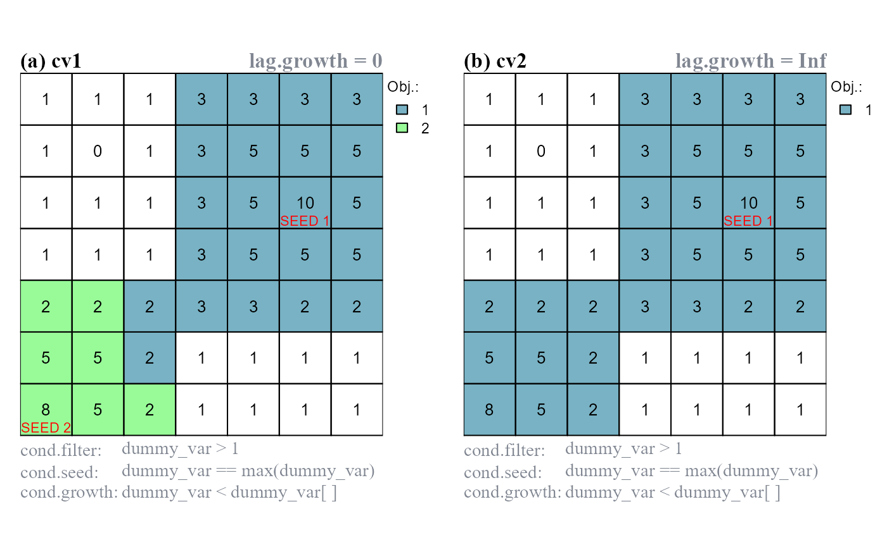
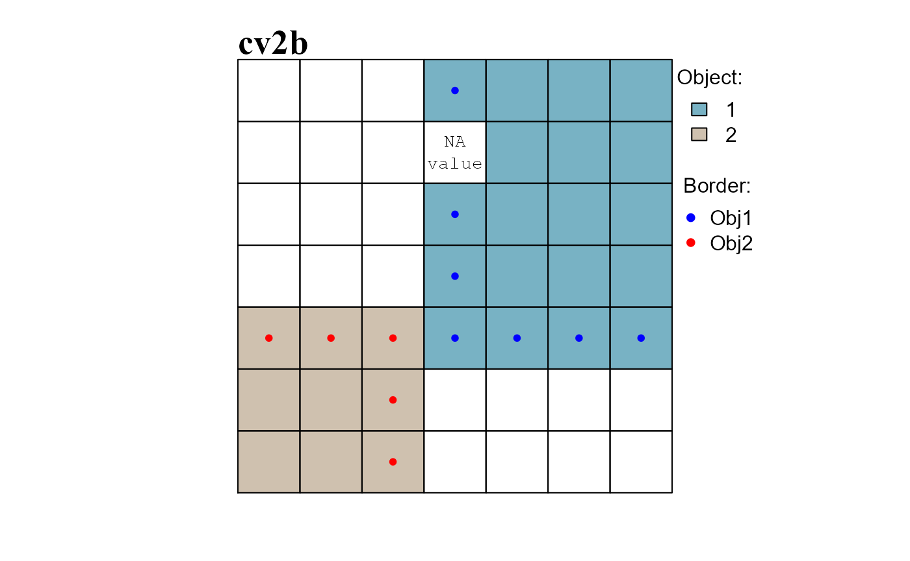

Object functions
Gerald H. Taranto
Wed 09, March, 2022
Source:vignettes/articles/scapesClassification_01_4_ObjFunctions.Rmd
scapesClassification_01_4_ObjFunctions.RmdFunctions: cond.4.nofn(), anchor.seed(), pi.sgm(), obj.border() and obj.nbs().
Object functions are functions used to identify and manipulate raster objects.
Input data
We will use a single-layer dummy raster to illustrate scapesClassification functions. We will start by computing its attribute table (where the raster is named "dummy_var") and its list of neighborhoods.
# LOAD LIBRARIES
library(scapesClassification)
library(terra)
# LOAD THE DUMMY RASTER
r <- list.files(system.file("extdata", package = "scapesClassification"),
pattern = "dummy_raster\\.tif", full.names = T)
r <- rast(r)
# COMPUTE THE ATTRIBUTE TABLE
at <- attTbl(r, "dummy_var")
head(at, 3)
## Cell dummy_var
## 1 1 1
## 2 2 1
## 3 3 1
# COMPUTE THE LIST OF NEIGBORHOODS
nbs <- ngbList(r)
head(nbs, 3)
## $`1`
## [1] 2 8 9
##
## $`2`
## [1] 1 3 8 9 10
##
## $`3`
## [1] 2 4 9 10 11Plots
In the following examples we will show how class vectors are computed. However, in order to improve the reading experience, the plots’ code is hidden. It can be accessed in the *.RMD file used to generate the html file.
The plotting procedure is to (i) convert a class vectors into a raster using the function cv.2.rast() and to (ii) visualize the raster using R or an external software. In our examples we will use the R package terra and its function terra::plot().
Manipulation functions
Functions: anchor.seed() and cond.4.nofn().
Raster object manipulation functions can be used to identify and manipulate raster objects.
anchor.seed
The function anchor.seed() can be considered as an anchor cell function as well as a raster object function. Its two principal uses are: (i) identify cells having particular characteristics (seed cells) and define around them growth and isolation buffers; (ii) assign unique IDs to groups of cells having particular characteristics.
Condition arguments
The function anchor.seed() take as inputs four sets of conditions:
cond.filter, the conditions to define what cells have to be evaluated by the function.cond.seed, the conditions to identify, at each iteration, the seed cell. The seed cell is the cell around which growth and isolation conditions are applied.cond.growth, the conditions to define a buffer around the seed cell.cond.isol, the conditions to isolate one seed cell (and its buffer) from another.
Condition evaluation
The first set of conditions to be evaluated is the cond.filter. The evaluation of the remaining sets of conditions is iterative (Figure 1):
A seed cell is identified and receives a classification number (as specified by the argument
class). If the argumentclass=NULL, then a new ID is assigned to every new seed cell.Cells connected with the seed cell meeting the conditions of
cond.growthare assigned to the same class of the seed cell (growth buffer). The rule evaluation take into account class continuity.Cells connected with the seed cell (or with its growth buffer) meeting the conditions of
cond.isolare assigned to the isolation buffer (class = -999). The rule evaluation take into account class continuity.Once seed, growth and isolation cells are identified, they are ignored in all successive iterations.
We can compute a new class vector based on the following rules. The two iterations performed by the function are showed in (Figure 1):
# Anchor seed
cv <- anchor.seed(at, nbs, class = 1,
cond.filter = "dummy_var > 2",
cond.seed = "dummy_var == max(dummy_var)",
cond.growth = NULL,
cond.isol = "dummy_var < dummy_var[]") # focal cell condition (see ?conditions)
##
##
Itr.1) Evaluated cells: 18/22; Elapsed time: 0 mins
Itr.2) Evaluated cells: 22/22; Elapsed time: 0 mins
## Seed cells: 2; Execution Time: 0 minscond.filter determines what cells have to be evaluated. The other rules are applied in the following order: (i) cond.seed identifies a seed cell; (ii) cond.growth identifies a growth buffer around the seed cell; (iii) cond.isol identifies an isolation buffer around the seed cell and its growth buffer. The function runs for two iterations and identifies two seed cells.
Evaluation lag
The function arguments lag.growth and lag.isol control the evaluation lag of relative focal cell conditions (Figure 2).
When
lag.*are set to 0, relative focal cell conditions have a standard behavior and compare the values of the test cells against the value of the focal cell.When
lag.*are set toInf, relative focal cell conditions compare the value of the test cells against the value of the seed cell identified at the start of the iteration.
# a. lag.growth=0
cv1 <- anchor.seed(at, nbs, class = NULL, # a new class for every seed and growth buffer
cond.filter = "dummy_var>1",
cond.seed = "dummy_var == max(dummy_var)",
cond.growth = "dummy_var<dummy_var[]", # focal cell condition (see ?conditions)
lag.growth = 0,
cond.isol = NULL)
##
##
Itr.1) Evaluated cells: 22/29; Elapsed time: 0 mins
Itr.2) Evaluated cells: 29/29; Elapsed time: 0 mins
## Seed cells: 2; Execution Time: 0 mins
# b. lag.growth=Inf
cv2 <- anchor.seed(at, nbs, class = NULL, # a new class for every seed and growth buffer
cond.filter = "dummy_var>1",
cond.seed = "dummy_var == max(dummy_var)",
cond.growth = "dummy_var<dummy_var[]", # focal cell condition (see ?conditions)
lag.growth = Inf,
cond.isol = NULL)
##
##
Itr.1) Evaluated cells: 29/29; Elapsed time: 0 mins
## Seed cells: 1; Execution Time: 0 mins
lag.* control the evaluation lag of relative focal cell conditions ([]). (a) lag.growth = 0, cond.growth compares the values of test cells against the value of the focal cell; two objects identified. (b) lag.growth = Inf, cond.growth compares the values of test cells against the value of the seed cell; one objects identified.
cond.4.nofn (hgrowth)
The function cond.4.nofn() can be used to expand the borders of raster objects. This functionality is activated with the argument hgrowth = TRUE (homogeneous growth, see ?cond.4.nofn for additional details).
In the following example we will: (i) identify peak cells (peak.cell), (ii) assign a unique ID to each peak (anchor.seed) and (iii) use the function cond.4.nofn() to expand the borders of the two peak objects. The borders are expanded based on the focal cell rule dummy_var <= dummy_var[] and on the test cell rule dummy_var > 1 (Figure 3c).
Note that intermediate class vectors are added as column vectors in the attribute table; in this way they can be accessed by name and used in classification rules.
# IDENTIFY RASTER OBJECTS (a,b) AND RESHAPE THEIR BORDERS (c)
# a. cv0, identify peak cells
at$cv0 <- peak.cell(attTbl = at, ngbList = nbs, p_edge = TRUE,
p_col = "dummy_var", p_fun = "max")
# b. cv1, assign unique IDs
at$cv1 <- anchor.seed(at, nbs, silent = TRUE, class = NULL, # a new class for every seed and growth buffer
cond.filter = "!is.na(cv0)",
cond.seed = "TRUE")
# c. cv2, homogeneous growth of raster objects
at$cv2 <- cond.4.nofn(attTbl = at, ngbList = nbs, classVector = at$cv1,
nbs_of = c(1, 2), class = NULL,
cond = "dummy_var <= dummy_var[] & dummy_var > 1",
hgrowth = TRUE) # HOMOGENEOUS GROWTH dummy_var values AND dummy_var values greater than 1.
Border functions
Functions: obj.border() and obj.nbs().
Raster object border functions can be used to identify the borders of raster objects.
obj.border
The function obj.border() identifies the borders of raster objects.
When missing values are present on a raster surface, the function works only with raster cells identified by attribute table row indices (see format inputs). When no missing value is present, row cell indices and cell numbers become equivalent (i.e. nth row correspond to the nth cell).
As an example we will: (i) add a missing value in the dummy raster and compute the neighborhood list with neighborhoods identified by row numbers (see ?ngbList), (ii) re-compute the raster objects of cv2 (Figure 3) and (iii) identify the borders of the raster objects (Figure 4).
# (i)
# ADD NA-VALUE
r2 <- r
r2[11] <- NA
# COMPUTE THE ATTRIBUTE TABLE
at2 <- attTbl(r2, "dummy_var")
# COMPUTE THE LIST OF NEIGBORHOODS
nbs2 <- ngbList(r2, rNumb=TRUE, attTbl=at2) # rnumb MUST be true to use obj.border
# (ii)
# a. cv0, identify peak cells
at2$cv0 <- peak.cell(at2, nbs2, rNumb=TRUE, p_edge=TRUE, p_col="dummy_var", p_fun="max")
# b. cv1, assign unique IDs
at2$cv1 <- anchor.seed(at2, nbs2, rNumb=TRUE, silent=TRUE, cond.filter="!is.na(cv0)", cond.seed="TRUE")
# c. cv2b, homogeneous growth of raster objects
at2$cv2b<- cond.4.nofn(at2, nbs2, rNumb=TRUE, classVector=at2$cv1, nbs_of=c(1, 2), hgrowth=TRUE,
cond="dummy_var <= dummy_var[] & dummy_var > 1")
# (iii)
# RASTER OBJECTS
RO <- split(1:NROW(at2), at2$cv2b)
print(RO) # values are attribute table row indices
## $`1`
## [1] 4 5 6 7 11 12 13 17 18 19 20 24 25 26 27 31 32 33 34
##
## $`2`
## [1] 28 29 30 35 36 37 42 43 44
# COMPUTE BORDERS
RO_bd <- obj.border(RO, nbs2, silent = TRUE)
# CONVERT ROW INDICES TO CELL NUMBERS
RO_bd1 <- at2$Cell[RO_bd[["1"]]]
RO_bd2 <- at2$Cell[RO_bd[["2"]]]
# ROW INDICES AND CELL NUMBERS ARE NOT EQUAL
print(RO_bd) # attribute table row indices
## $`1`
## [1] 4 17 24 31 32 33 34
##
## $`2`
## [1] 29 28 30 37 44
print(RO_bd1) # cell numbers
## [1] 4 18 25 32 33 34 35
print(RO_bd2)
## [1] 30 29 31 38 45
# Row indices: used by scapesClassification functions (increase function speed)
# have to be converted back to cell numbers before plotting
obj.nbs
The function obj.nbs() returns a named nested lists having the following characteristics:
Each element of the list corresponds to a raster object;
Each element contains a named nested list whose names correspond to the IDs of neighboring raster objects;
The values of the nested lists identify the raster cells comprising the shared borders.
When missing values are present on a raster surface, the function works only with raster cells identified by attribute table row indices (see format inputs). When no missing value is present, row cell indices and cell numbers become equivalent (i.e. nth row correspond to the nth cell).
We can use the class vector cv2 computed in the previews example (obj.border) to illustrate how the function works.
# RASTER OBJECTS
RO <- split(1:NROW(at), at2$cv2b)
print(RO) # values are attribute table row indices
## $`1`
## [1] 4 5 6 7 11 12 13 17 18 19 20 24 25 26 27 31 32 33 34
##
## $`2`
## [1] 28 29 30 35 36 37 42 43 44
# COMPUTE BORDERS
RO_bd <- obj.border(RO, nbs2, silent = TRUE) # compute borders
####################################################################################
# COMPUTE SHARED BORDERS
####################################################################################
RO_shared_bd <- obj.nbs(RO_bd, nbs2, silent = TRUE)
# Obj.1 has as neighbor Obj.2 and cells in rows 24 and 31 comprise the shared border
RO_shared_bd[["1"]]
## $`2`
## [1] 24 31
# Obj.2 has as neighbor Obj.1 and cells in rows 30 and 37 comprise the shared border
RO_shared_bd[["2"]]
## $`1`
## [1] 30 37
# CONVERT ROW INDICES TO CELL NUMBERS
sharedBD1 <- at2$Cell[ RO_shared_bd[["1"]][["2"]] ]
sharedBD2 <- at2$Cell[ RO_shared_bd[["2"]][["1"]] ]Position index functions
Functions: rel.pi(), pi.sgm() and pi.add().
Raster object position index functions can be used to compute relative position indices and to use them to manipulate raster objects.
rel.pi
The function rel.pi() computes the standardized or normalized relative position index of raster objects.
Standardized position index values are computed with the formula
( x - mean(x) ) / sd(x);Normalized position index values are computed with the formula
( x - min(x) ) / ( max(x) - min(x) ).
In either case position index values are relative to individual raster objects: high values indicate the top positions of an object; low values indicate the bottom positions of an object. We can compute the relative position index of cv2 (Figure 3). Results are plotted in Figure 6.
# STANDARDIZED RELATIVE POSITION INDEX
relPI_s <- rel.pi(attTbl = at, RO = "cv2", el = "dummy_var",
type = "s")
# NORMALIZED RELATIVE POSITION INDEX
relPI_n <- rel.pi(attTbl = at, RO = "cv2", el = "dummy_var",
type = "n")
pi.sgm
The function pi.sgm() segments raster objects based on position index values. As an example we will imagine that all raster values greater than 1 constitute a single raster object. We will segment the raster object at positions having normalized relative position index values of 0 (Figure 7).
# a) initial raster object
at$RO <- cond.4.all(at, "dummy_var > 1", class = 1)
# b) compute normalized relative position index
at$PI <- rel.pi(attTbl=at, RO="RO", el="dummy_var", type = "n")
# c) segment raster object
at$ROs <- pi.sgm(at, nbs, RO = "RO", mainPI = "PI", cut.mPI = 0)
# d) segment raster object, min number of cell is 5
at$ROn <- pi.sgm(at, nbs, RO = "RO", mainPI = "PI", cut.mPI = 0,
min.N = 5)0. (d) Segment on values equal to 0 and remove objects with less than 5 cells.
pi.add
The function pi.add() adds new raster objects based on position index values. As an example we will (i) slightly modify the values of our dummy variable, (ii) assume to have, initially, a single raster object, (iii) compute standardized position index values based on all dummy raster values and (iv) add disjoint raster objects with position index values greater than 0.8 (Figure 8).
# Modify dummy raster values
r[c(1,2,45,46,47)] <- 6
at <- attTbl(r, "dummy_var")# re-compute at
nbs <- ngbList(r) # re-compute nbs
# a) initial raster object
at$RO <- anchor.seed(at, nbs, class=1, silent = TRUE,
cond.seed = "dummy_var == 8",
cond.growth = "dummy_var == 5")
# b) compute standardized relative position index
at$PI <- (at$dummy_var - mean(at$dummy_var))/stats::sd(at$dummy_var)
# c) add raster object
at$ROa <- pi.add(at, nbs, RO = "RO", mainPI = "PI", add.mPI = 0.8)
# d) add raster object, min number of cell is 3
at$ROn <- pi.add(at, nbs, RO = "RO", mainPI = "PI", add.mPI = 0.8,
min.N = 3)>0.8. (d) Add raster objects composed of cells having position index values >0.8 and with at least 3 cells. Note that new raster objects are added only if they do not share any border with the initial object.